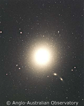
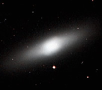
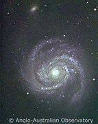
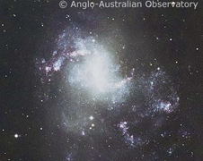

|
 |

NGC4526 has a lenticular morphology.
Credit: DSS |

M100 has a spiral morphology.
Credit: AAO |

NGC1313 has a hard to classify, irregular morphology.
Credit: AAO |
Astronomers use the term ‘morphology’ to refer to the structural properties of galaxies. A galaxy’s Hubble classification provides one way of describing its morphology, however, this classification scheme only considers the most prominent features: disks, bulges and bars. A more complete morphological classification of galaxies would include features such as extended stellar halos, warps, shells and tidal tails. Galaxies which clearly exhibit these morphological features are said to possess morphological peculiarities, and their Hubble type is usually followed by the suffix ‘pec’ (short for peculiar).
Both the prominent features of galaxies and morphological peculiarities can be explained by models of galaxy formation and evolution.